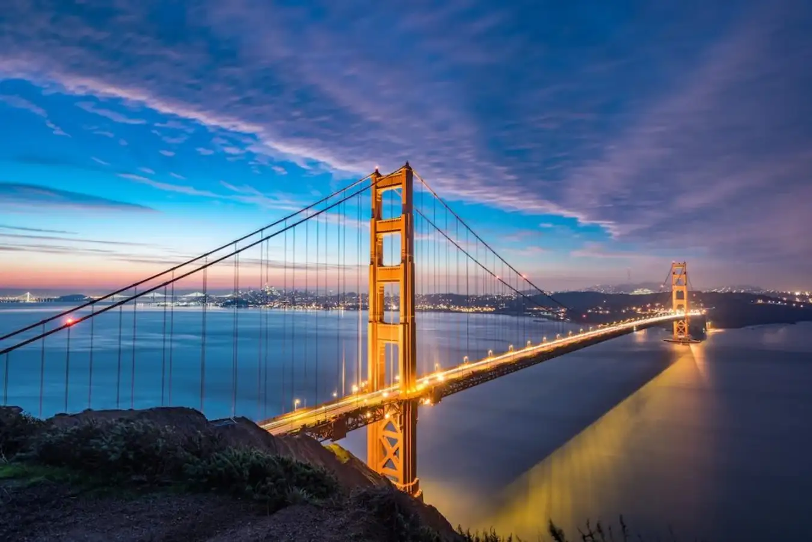

Cầu Cổng Vàng là một trong những điểm du lịch nổi tiếng nhất tại San Francisco, nhận được sự yêu thích của du khách trong và ngoài nước. Bạn có thể tham gia các tour du lịch đến cầu để chiêm ngưỡng toàn cảnh vẻ đẹp của thành phố từ trên cao hoặc tự do tản bộ trên cầu và ngắm nhìn khung cảnh tuyệt đẹp bao quanh. Bạn nên tham khảo thông tin về những tour du lịch tại Traveloka Experience để có lựa chọn phù hợp nhất cho chuyến đi của mình.
Cầu Cổng Vàng cũng là địa điểm tổ chức nhiều sự kiện nổi tiếng trong năm. Trong số đó, có thể kể đến lễ hội âm nhạc trên cầu - "Bridge to Bridge Run", giải chạy đua từ cầu Cổng Vàng đến cầu Đại Tây Dương, hội chợ lễ hội "Bridge to Bridge Cruise" và một số hoạt động đặc sắc khác.
Hằng năm vào dịp Giáng sinh, cầu Cổng Vàng được trang trí bằng hàng ngàn đèn LED để tạo ra một bức tranh đẹp mắt và lấp lánh giữa đêm tối. Sự kiện "Cầu Ánh Sáng" thu hút đông đảo du khách và người dân địa phương đến tham quan và trải nghiệm.
Cầu Cổng Vàng cũng là một địa điểm quen thuộc trong nhiều bộ phim, đặc biệt là những bộ phim xoay quanh cuộc sống tại San Francisco. Cây cầu đã xuất hiện trong các bối cảnh của những tựa phim nổi tiếng như: "The Princess Diaries", "X-Men: The Last Stand", "The Pursuit of Happyness" và "Vertigo".